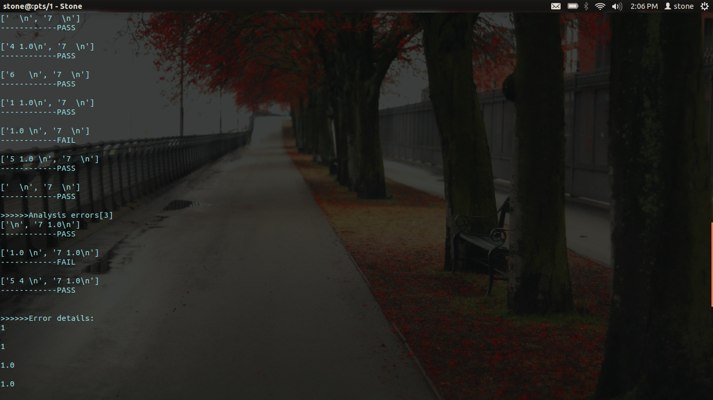
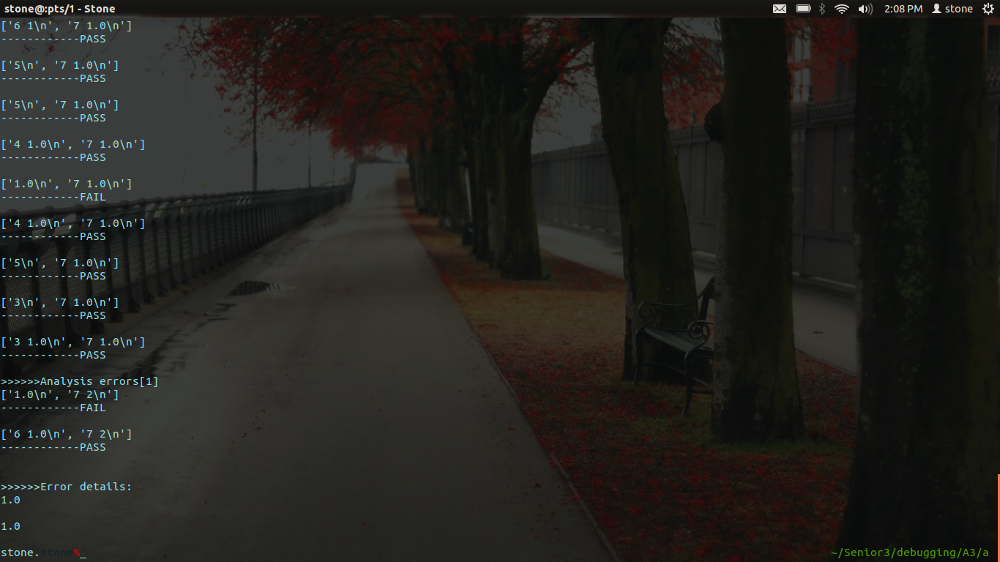
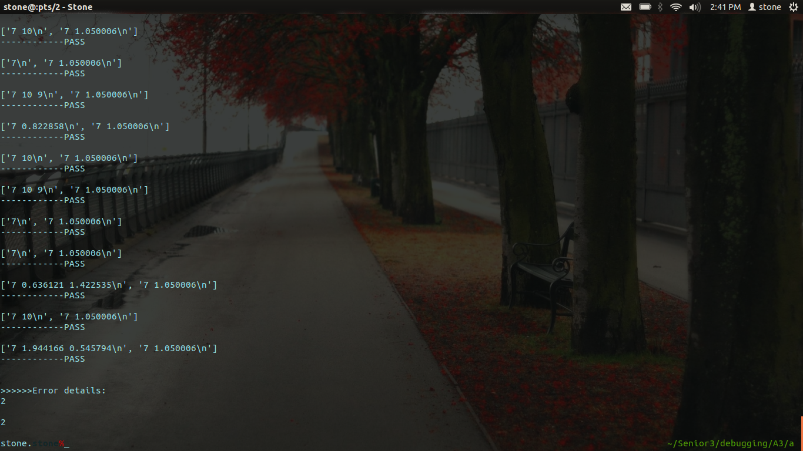

组员：黄思东(组长) 刘汉冰 黄良超 刘扬
作业描述
给定程序a.c的功能：模拟进程管理，包括多级优先级，执行一个进程，新增一个进程，阻塞和解除阻塞进程，提升进程优先级等功能。
作业要求
1. 根据已经给出的示例程序，了解如何使用ddmin算法去简化test2.c的错误测试用例，并最终得到一个最小的测试用例。
2. 模拟示例，给出适用于程序a的简化错误测试用例算法，在报告中给出代码。
3. 使用2中的简化程序，简化给定的程序a的3个错误测试用例，给出简化结果。
4. 根据对程序的功能了解及最小测试用例，对程序进行错误定位，给出测试方法，过程，以及定位结果。
5. 根据实验，总结简化错误测试用例对于程序调试的作用，并给出自己的感想。Part1. 对ddmin算法的理解:
在阅读完由python写的ddmin算法程序，我们对ddmin算法的理解如下：
1. 首先对测试用例进行划分，示例采用了2分法，将测试用例分成了2部分。
2. 分别对这两部分的补集进行测试，如果通过，则错误在该部分，如果不通过，错误则在另外的部分。
3. 对上一步得出来的错误部分反复进行1~2步骤，直到得到我们满意的最小测试用例。Part2. 如何将ddmin算法应用到a.c程序
在阅读完a.c程序之后，我们仔细对比了示例与程序a的不同以及给出的ddmin算法的不足:
- 示例程序的错误用例当中的每一个元素都具有独立性，就是说这个元素是否导致程序出错，并不会影响到其他的元素部分，而在程序a中情况便有所不同了，因为这是一个模拟进程管理的程序，出错的功能部分将会对整个进程队列造成影响，所以很有可能出现的情况是这个元素能使程序出错，但是只有在别的元素才能够显示出错误。所以示例ddmin的二分法并不能够适应程序a。
- 示例程序通过取补集的方法来测试各个部分，但是这个取补集的算法有问题，这个用python实现的取列表补集的算法存在bug，它并没有考虑到列表中存在重复元素的情况，如果原来的列表是这样[1,2,3,1,5]，一个子集是这样[1,2,3]，我们通过这个函数来取得的补集是这样[5]，但这并不是我们在程序a要的结果，我们需要的结果是[1,5]，所以我们不能使用所给示例给出的取补集的算法。而需要自己通过python列表解析自己来实现。
- 程序a比较地特殊，因为我们如果想要通过对两个程序生成的文件进行比较相同与否的方法来测试是否通过，那我们必须要先分析出程序a有那些功能对程序的数据有影响，哪些功能则是来输出文件的。然后再以这些功能来划分测试用例元素，这一得到的结果会比无计划无目的的二分法更加有针对性。
这里举一个例子:
存在这样的一个测试用例
1.---------------------
2.---------------------
3.×××××××× <--- 这行元素能够导致错误
4.---------------------
5.---------------------
6.&&&&&&&& <--- 但直到这一行元素才将错误打印出来
7.---------------------
8.---------------------
如果我们对这个测试用例采用二分法，分为1~4,5~8，那么分出来的两部分都将完美通过，我们将永远都找不到出现出错的地方。- 我们采用的分法，通过阅读程序a，我们清楚了在程序a实现的7个功能当中，我们可以这一进行分类:
影响数据功能：功能1~功能5
进行输出功能：功能6~功能7
在进一步划分，功能6只能对单行进行影响，我们不能对它作为影响输出的一个功能，考虑这种情况：（第一个数字代表行号，第二个数字代表功能）
1.3--------------------
2.2×××××××× <--- 这行能够导致错误
3.1--------------------
4.6--------------------
5.3--------------------
6.6&&&&&&&& <--- 但错误直到第二个功能6才打印出来7.5--------------------
8.5--------------------
9.7--------------------
如果我们以功能6,7进行划分，那么在上面这个情况，我们将会出现误判。
所以以功能7来进行元素的分段划分来得到的效果是最好的。- 将测试用例进行分段之后，我们得到了若干段的测试用例。下一步我们便是要找出哪几段存在错误测试用例。为此，我们这样实现，对每一段通过我们自己取补集的方法取得测试用例的补集，对补集进行测试，若pass，则我们有理由相信错误测试用例存在这一段，若补集fail，则我们对这一段进行一次测试,若pass，那么这一段没有错误测试用例，若fail，那么我们也有理由相信这一段存在错误测试用例。通过循环，对每一段都进行同样的操作，我们得到了存在错误测试用例的用例段。
- 在给出的示例当中，由于元素的独立性我们可以通过不断地迭代二分法来找到最小错误厕所用例，而在程序a当中因为元素间的相关性，我们虽然可以找到一种分类方法来取得存在错误段的测试段，但是我们无法通过不断地迭代来找到最小的错误测试用例，所以我们需要在第5步完成之后采取一种新的方法来简化错误测试仪用例。我们采取这样的做法，对存在错误的每一段我们将元素大于等于2的段采取将每一个元素于最后一个元素（功能7）进行组合，然后进行测试，如果fail，那么错误必将是这个元素，如果pass，那么我们暂时认为这个元素是没有问题的。通过循环，我们最终将得到最小错误测试用例。
Part3. a_ddmin.py
#! usr/bin/env python # coding: utf-8 # @version 1.0 # @time Mon May 14 19:56:35 HKT 2012 # @author stone import sys import os import string import subprocess from split import split errors = [] details = [] ''' ddmin function for a.c. ''' def ddmin(c): flag_pos = [] assert test(c) == "FAIL" (subsets, flag_pos) = split(c) print ">>>>>>Subsets are: " print subsets print ">>>>>>Flag positions are:" print flag_pos print for i in range(len(subsets)): complement = [] for j in range(len(subsets)): if not j == i: complement.extend(subsets[j]) if test(complement) == "PASS": print "complement pass" errors.append(subsets[i]) elif test(subsets[i]) == "FAIL": errors.append(subsets[i]) else: pass print ">>>>>>Error lists:" print errors print further() ''' a function to further analysis the simple the testcase from errors list ''' def further(): for i in range(len(errors)): if len(errors[i]) >= 2: print ">>>>>>Analysis errors[%d]" % i tmp = [] for j in range(len(errors[i])-1): tmp.append(errors[i][j]) tmp.append(errors[i][len(errors[i])-1]) if test(tmp) == "FAIL": details.append(tmp[0]) tmp = [] print print ">>>>>>Error details:" for e in details: print e ''' a function to split a list into several lists to make sure that every list gets at most 1 element start with '6' or '7'. ''' def split(c): subsets = [] subset = [] flag = 0 flag_pos = [] for i in range(len(c)): if c[i][0] == '7': flag_pos.append(i) flag = 1 else: if flag == 1: subsets.append(subset) subset = [] subset.append(c[i]) flag = 0 continue subset.append(c[i]) if i+1 == len(c): subsets.append(subset) return (subsets, flag_pos) ''' function 4 ''' def test(c): print c f2 = open('temp','w') for element in c: f2.write(element) f2.close() result1 = subprocess.call('./a 7 10 9 < temp > out1', shell=True) result2 = subprocess.call('./a_pass 7 10 9 < temp > out11', shell=True) result = subprocess.call('./comparefiles out1 out11',shell=True) #print result if (result == 1): print "------------FAIL" flag2 = raw_input(' ') return "FAIL" else: print "------------PASS" flag2 = raw_input(' ') return "PASS" ''' function main ''' def main(): f1 = open("testcases/ft.6",'r') #open the failure the file of test case. content = f1.readlines() #store contents of the test case into a list contentself. ddmin(content) #call ddmin(list) if __name__ == '__main__': # main()
Part4. a_ddmin.py运行结果
测试1. 运行a_ddmin.py 将测试过程改为
f1 = open("testcases/bdt100",'r') result1 = subprocess.call('./a 2 8 7 < temp > out1', shell=True) result2 = subprocess.call('./a_pass 2 8 7 < temp > out11', shell=True) result = subprocess.call('./comparefiles out1 out11',shell=True)运行结果截图，后面会给出完整输出结果：  分析输出结果，我们直到最小错误测试用例为:1 7 1.0 7
测试2. 运行a_ddmin.py 将测试过程改为
f1 = open("testcases/bdt29",'r') result1 = subprocess.call('./a 8 4 2 < temp > out2', shell=True) result2 = subprocess.call('./a_pass 8 4 2 < temp > out22', shell=True) result = subprocess.call('./comparefiles out2 out22',shell=True)运行结果截图，后面会给出完整输出结果：  分析输出结果，我们直到最小错误测试用例为:1.0 7
测试3. 运行a_ddmin.py 将测试过程改为
f1 = open("testcases/ft.6",'r') result1 = subprocess.call('./a 2 7 9 < temp > out3', shell=True) result2 = subprocess.call('./a_pass 2 7 9 < temp > out33', shell=True) result = subprocess.call('./comparefiles out3 out33',shell=True)运行结果截图，后面会给出完整输出结果：  分析输出结果，我们直到最小错误测试用例为:
2 7
测试4. 运行a_ddmin.py 将测试过程改为
f1 = open("testcases/ft.6",'r') result1 = subprocess.call('./a 7 10 9 < temp > out4', shell=True) result2 = subprocess.call('./a_pass 7 10 9 < temp > out44', shell=True) result = subprocess.call('./comparefiles out4 out44',shell=True)运行结果截图，后面会给出完整输出结果： 分析输出结果，我们直到最小错误测试用例为:
2 7
Part5. 完整输出结果
test1.
['4 1.0\n', '1 \n', '5 1.0 \n', '7 1.0\n', '1 \n', '7 \n', '4 1.0\n', '1 2\n', '1.0 \n', ' \n', '4 1.0\n', '6 \n', '1 1.0\n', '1.0 \n', '5 1.0 \n', ' \n', '7 \n', '\n', '1.0 \n', '5 4 \n', '7 1.0\n', '6\n', '1 3\n', '4 0.912764\n', '3\n', '4 0.553462\n', '5\n', '6\n', '1 4\n', '1 2\n', '3\n', '5\n', '4 0.974608\n', '6\n'] ------------FAIL >>>>>>Subsets are: [['4 1.0\n', '1 \n', '5 1.0 \n', '7 1.0\n'], ['1 \n', '7 \n'], ['4 1.0\n', '1 2\n', '1.0 \n', ' \n', '4 1.0\n', '6 \n', '1 1.0\n', '1.0 \n', '5 1.0 \n', ' \n', '7 \n'], ['\n', '1.0 \n', '5 4 \n', '7 1.0\n'], ['6\n', '1 3\n', '4 0.912764\n', '3\n', '4 0.553462\n', '5\n', '6\n', '1 4\n', '1 2\n', '3\n', '5\n', '4 0.974608\n', '6\n']] >>>>>>Flag positions are: [3, 5, 16, 20] ['1 \n', '7 \n', '4 1.0\n', '1 2\n', '1.0 \n', ' \n', '4 1.0\n', '6 \n', '1 1.0\n', '1.0 \n', '5 1.0 \n', ' \n', '7 \n', '\n', '1.0 \n', '5 4 \n', '7 1.0\n', '6\n', '1 3\n', '4 0.912764\n', '3\n', '4 0.553462\n', '5\n', '6\n', '1 4\n', '1 2\n', '3\n', '5\n', '4 0.974608\n', '6\n'] ------------FAIL ['4 1.0\n', '1 \n', '5 1.0 \n', '7 1.0\n'] ------------FAIL ['4 1.0\n', '1 \n', '5 1.0 \n', '7 1.0\n', '4 1.0\n', '1 2\n', '1.0 \n', ' \n', '4 1.0\n', '6 \n', '1 1.0\n', '1.0 \n', '5 1.0 \n', ' \n', '7 \n', '\n', '1.0 \n', '5 4 \n', '7 1.0\n', '6\n', '1 3\n', '4 0.912764\n', '3\n', '4 0.553462\n', '5\n', '6\n', '1 4\n', '1 2\n', '3\n', '5\n', '4 0.974608\n', '6\n'] ------------FAIL ['1 \n', '7 \n'] ------------FAIL ['4 1.0\n', '1 \n', '5 1.0 \n', '7 1.0\n', '1 \n', '7 \n', '\n', '1.0 \n', '5 4 \n', '7 1.0\n', '6\n', '1 3\n', '4 0.912764\n', '3\n', '4 0.553462\n', '5\n', '6\n', '1 4\n', '1 2\n', '3\n', '5\n', '4 0.974608\n', '6\n'] ------------FAIL ['4 1.0\n', '1 2\n', '1.0 \n', ' \n', '4 1.0\n', '6 \n', '1 1.0\n', '1.0 \n', '5 1.0 \n', ' \n', '7 \n'] ------------FAIL ['4 1.0\n', '1 \n', '5 1.0 \n', '7 1.0\n', '1 \n', '7 \n', '4 1.0\n', '1 2\n', '1.0 \n', ' \n', '4 1.0\n', '6 \n', '1 1.0\n', '1.0 \n', '5 1.0 \n', ' \n', '7 \n', '6\n', '1 3\n', '4 0.912764\n', '3\n', '4 0.553462\n', '5\n', '6\n', '1 4\n', '1 2\n', '3\n', '5\n', '4 0.974608\n', '6\n'] ------------FAIL ['\n', '1.0 \n', '5 4 \n', '7 1.0\n'] ------------FAIL ['4 1.0\n', '1 \n', '5 1.0 \n', '7 1.0\n', '1 \n', '7 \n', '4 1.0\n', '1 2\n', '1.0 \n', ' \n', '4 1.0\n', '6 \n', '1 1.0\n', '1.0 \n', '5 1.0 \n', ' \n', '7 \n', '\n', '1.0 \n', '5 4 \n', '7 1.0\n'] ------------FAIL ['6\n', '1 3\n', '4 0.912764\n', '3\n', '4 0.553462\n', '5\n', '6\n', '1 4\n', '1 2\n', '3\n', '5\n', '4 0.974608\n', '6\n'] ------------PASS >>>>>>Error lists: [['4 1.0\n', '1 \n', '5 1.0 \n', '7 1.0\n'], ['1 \n', '7 \n'], ['4 1.0\n', '1 2\n', '1.0 \n', ' \n', '4 1.0\n', '6 \n', '1 1.0\n', '1.0 \n', '5 1.0 \n', ' \n', '7 \n'], ['\n', '1.0 \n', '5 4 \n', '7 1.0\n']] >>>>>>Analysis errors[0] ['4 1.0\n', '7 1.0\n'] ------------PASS ['1 \n', '7 1.0\n'] ------------FAIL ['5 1.0 \n', '7 1.0\n'] ------------PASS >>>>>>Analysis errors[1] ['1 \n', '7 \n'] ------------FAIL >>>>>>Analysis errors[2] ['4 1.0\n', '7 \n'] ------------PASS ['1 2\n', '7 \n'] ------------PASS ['1.0 \n', '7 \n'] ------------FAIL [' \n', '7 \n'] ------------PASS ['4 1.0\n', '7 \n'] ------------PASS ['6 \n', '7 \n'] ------------PASS ['1 1.0\n', '7 \n'] ------------PASS ['1.0 \n', '7 \n'] ------------FAIL ['5 1.0 \n', '7 \n'] ------------PASS [' \n', '7 \n'] ------------PASS >>>>>>Analysis errors[3] ['\n', '7 1.0\n'] ------------PASS ['1.0 \n', '7 1.0\n'] ------------FAIL ['5 4 \n', '7 1.0\n'] ------------PASS >>>>>>Error details: 1 1 1.0 1.0 1.0test2
['6 1\n', '5\n', '5\n', '4 1.0\n', '1.0\n', '4 1.0\n', '5\n', '3\n', '3 1.0\n', '7 1.0\n', '1.0\n', '6 1.0\n', '7 2\n'] ------------FAIL >>>>>>Subsets are: [['6 1\n', '5\n', '5\n', '4 1.0\n', '1.0\n', '4 1.0\n', '5\n', '3\n', '3 1.0\n', '7 1.0\n'], ['1.0\n', '6 1.0\n', '7 2\n']] >>>>>>Flag positions are: [9, 12] ['1.0\n', '6 1.0\n', '7 2\n'] ------------FAIL ['6 1\n', '5\n', '5\n', '4 1.0\n', '1.0\n', '4 1.0\n', '5\n', '3\n', '3 1.0\n', '7 1.0\n'] ------------FAIL ['6 1\n', '5\n', '5\n', '4 1.0\n', '1.0\n', '4 1.0\n', '5\n', '3\n', '3 1.0\n', '7 1.0\n'] ------------FAIL ['1.0\n', '6 1.0\n', '7 2\n'] ------------FAIL >>>>>>Error lists: [['6 1\n', '5\n', '5\n', '4 1.0\n', '1.0\n', '4 1.0\n', '5\n', '3\n', '3 1.0\n', '7 1.0\n'], ['1.0\n', '6 1.0\n', '7 2\n']] >>>>>>Analysis errors[0] ['6 1\n', '7 1.0\n'] ------------PASS ['5\n', '7 1.0\n'] ------------PASS ['5\n', '7 1.0\n'] ------------PASS ['4 1.0\n', '7 1.0\n'] ------------PASS ['1.0\n', '7 1.0\n'] ------------FAIL ['4 1.0\n', '7 1.0\n'] ------------PASS ['5\n', '7 1.0\n'] ------------PASS ['3\n', '7 1.0\n'] ------------PASS ['3 1.0\n', '7 1.0\n'] ------------PASS >>>>>>Analysis errors[1] ['1.0\n', '7 2\n'] ------------FAIL ['6 1.0\n', '7 2\n'] ------------PASS >>>>>>Error details: 1.0 1.0test3
['2\n', '2\n', '2 7 9\n', '2 1.167468\n', '2 7 9\n', '2 1.733724 0.259509\n', '2 7\n', '7\n', '7 10 9\n', '7 1.173496 0.577199\n', '7\n', '7 10 9\n', '7 10 9\n', '7\n', '7 1.220555\n', '7 10 9\n', '7 1.650119\n', '7 10\n', '7\n', '7 10 9\n', '7 0.822858\n', '7 10\n', '7 10 9\n', '7\n', '7\n', '7 0.636121 1.422535\n', '7 10\n', '7 1.944166 0.545794\n', '7 1.050006\n'] ------------FAIL >>>>>>Subsets are: [['2\n', '2\n', '2 7 9\n', '2 1.167468\n', '2 7 9\n', '2 1.733724 0.259509\n', '2 7\n', '7\n', '7 10 9\n', '7 1.173496 0.577199\n', '7\n', '7 10 9\n', '7 10 9\n', '7\n', '7 1.220555\n', '7 10 9\n', '7 1.650119\n', '7 10\n', '7\n', '7 10 9\n', '7 0.822858\n', '7 10\n', '7 10 9\n', '7\n', '7\n', '7 0.636121 1.422535\n', '7 10\n', '7 1.944166 0.545794\n', '7 1.050006\n']] >>>>>>Flag positions are: [7, 8, 9, 10, 11, 12, 13, 14, 15, 16, 17, 18, 19, 20, 21, 22, 23, 24, 25, 26, 27, 28] [] ------------PASS complement pass >>>>>>Error lists: [['2\n', '2\n', '2 7 9\n', '2 1.167468\n', '2 7 9\n', '2 1.733724 0.259509\n', '2 7\n', '7\n', '7 10 9\n', '7 1.173496 0.577199\n', '7\n', '7 10 9\n', '7 10 9\n', '7\n', '7 1.220555\n', '7 10 9\n', '7 1.650119\n', '7 10\n', '7\n', '7 10 9\n', '7 0.822858\n', '7 10\n', '7 10 9\n', '7\n', '7\n', '7 0.636121 1.422535\n', '7 10\n', '7 1.944166 0.545794\n', '7 1.050006\n']] >>>>>>Analysis errors[0] ['2\n', '7 1.050006\n'] ------------FAIL ['2\n', '7 1.050006\n'] ------------FAIL ['2 7 9\n', '7 1.050006\n'] ------------PASS ['2 1.167468\n', '7 1.050006\n'] ------------PASS ['2 7 9\n', '7 1.050006\n'] ------------PASS ['2 1.733724 0.259509\n', '7 1.050006\n'] ------------PASS ['2 7\n', '7 1.050006\n'] ------------PASS ['7\n', '7 1.050006\n'] ------------PASS ['7 10 9\n', '7 1.050006\n'] ------------PASS ['7 1.173496 0.577199\n', '7 1.050006\n'] ------------PASS ['7\n', '7 1.050006\n'] ------------PASS ['7 10 9\n', '7 1.050006\n'] ------------PASS ['7 10 9\n', '7 1.050006\n'] ------------PASS ['7\n', '7 1.050006\n'] ------------PASS ['7 1.220555\n', '7 1.050006\n'] ------------PASS ['7 10 9\n', '7 1.050006\n'] ------------PASS ['7 1.650119\n', '7 1.050006\n'] ------------PASS ['7 10\n', '7 1.050006\n'] ------------PASS ['7\n', '7 1.050006\n'] ------------PASS ['7 10 9\n', '7 1.050006\n'] ------------PASS ['7 0.822858\n', '7 1.050006\n'] ------------PASS ['7 10\n', '7 1.050006\n'] ------------PASS ['7 10 9\n', '7 1.050006\n'] ------------PASS ['7\n', '7 1.050006\n'] ------------PASS ['7\n', '7 1.050006\n'] ------------PASS ['7 0.636121 1.422535\n', '7 1.050006\n'] ------------PASS ['7 10\n', '7 1.050006\n'] ------------PASS ['7 1.944166 0.545794\n', '7 1.050006\n'] ------------PASS >>>>>>Error details: 2 2test4
['2\n', '2\n', '2 7 9\n', '2 1.167468\n', '2 7 9\n', '2 1.733724 0.259509\n', '2 7\n', '7\n', '7 10 9\n', '7 1.173496 0.577199\n', '7\n', '7 10 9\n', '7 10 9\n', '7\n', '7 1.220555\n', '7 10 9\n', '7 1.650119\n', '7 10\n', '7\n', '7 10 9\n', '7 0.822858\n', '7 10\n', '7 10 9\n', '7\n', '7\n', '7 0.636121 1.422535\n', '7 10\n', '7 1.944166 0.545794\n', '7 1.050006\n'] ------------FAIL >>>>>>Subsets are: [['2\n', '2\n', '2 7 9\n', '2 1.167468\n', '2 7 9\n', '2 1.733724 0.259509\n', '2 7\n', '7\n', '7 10 9\n', '7 1.173496 0.577199\n', '7\n', '7 10 9\n', '7 10 9\n', '7\n', '7 1.220555\n', '7 10 9\n', '7 1.650119\n', '7 10\n', '7\n', '7 10 9\n', '7 0.822858\n', '7 10\n', '7 10 9\n', '7\n', '7\n', '7 0.636121 1.422535\n', '7 10\n', '7 1.944166 0.545794\n', '7 1.050006\n']] >>>>>>Flag positions are: [7, 8, 9, 10, 11, 12, 13, 14, 15, 16, 17, 18, 19, 20, 21, 22, 23, 24, 25, 26, 27, 28] [] ------------PASS complement pass >>>>>>Error lists: [['2\n', '2\n', '2 7 9\n', '2 1.167468\n', '2 7 9\n', '2 1.733724 0.259509\n', '2 7\n', '7\n', '7 10 9\n', '7 1.173496 0.577199\n', '7\n', '7 10 9\n', '7 10 9\n', '7\n', '7 1.220555\n', '7 10 9\n', '7 1.650119\n', '7 10\n', '7\n', '7 10 9\n', '7 0.822858\n', '7 10\n', '7 10 9\n', '7\n', '7\n', '7 0.636121 1.422535\n', '7 10\n', '7 1.944166 0.545794\n', '7 1.050006\n']] >>>>>>Analysis errors[0] ['2\n', '7 1.050006\n'] ------------FAIL ['2\n', '7 1.050006\n'] ------------FAIL ['2 7 9\n', '7 1.050006\n'] ------------PASS ['2 1.167468\n', '7 1.050006\n'] ------------PASS ['2 7 9\n', '7 1.050006\n'] ------------PASS ['2 1.733724 0.259509\n', '7 1.050006\n'] ------------PASS ['2 7\n', '7 1.050006\n'] ------------PASS ['7\n', '7 1.050006\n'] ------------PASS ['7 10 9\n', '7 1.050006\n'] ------------PASS ['7 1.173496 0.577199\n', '7 1.050006\n'] ------------PASS ['7\n', '7 1.050006\n'] ------------PASS ['7 10 9\n', '7 1.050006\n'] ------------PASS ['7 10 9\n', '7 1.050006\n'] ------------PASS ['7\n', '7 1.050006\n'] ------------PASS ['7 1.220555\n', '7 1.050006\n'] ------------PASS ['7 10 9\n', '7 1.050006\n'] ------------PASS ['7 1.650119\n', '7 1.050006\n'] ------------PASS ['7 10\n', '7 1.050006\n'] ------------PASS ['7\n', '7 1.050006\n'] ------------PASS ['7 10 9\n', '7 1.050006\n'] ------------PASS ['7 0.822858\n', '7 1.050006\n'] ------------PASS ['7 10\n', '7 1.050006\n'] ------------PASS ['7 10 9\n', '7 1.050006\n'] ------------PASS ['7\n', '7 1.050006\n'] ------------PASS ['7\n', '7 1.050006\n'] ------------PASS ['7 0.636121 1.422535\n', '7 1.050006\n'] ------------PASS ['7 10\n', '7 1.050006\n'] ------------PASS ['7 1.944166 0.545794\n', '7 1.050006\n'] ------------PASS >>>>>>Error details: 2 2
Part6. 通过最小错误测试用例，来定位错误代码，这里有两种方法来实现
Method.1
既然我们已经知道出现错误的为功能1和功能2,而且出错的在从文件读入的地方，所以我们可以这样做，在读入文件，分析参数和功能的地方，将程序获得的参数
打印出来，我们便知道是如何出现，错误，以及定位出现错误的地方。我们将程序a进行了小修改，修改的地方如下switch(*command) { case NEW_JOB : sscanf(buf, "%*s%d", prio); printf("new job: prio is %d\n", *prio); break; case UNBLOCK : sscanf(buf, "%*s%f", ratio); printf("unblock: ratio is %f\n", *ratio); break; case UPGRADE_PRIO : sscanf(buf, "%*s%d%f", prio, ratio); printf("upgrade prio: prio is %d, ratio is %f\n", *prio, *ratio); break; }最小错误测试用例1
最小错误测试用例2
最小错误测试用例3
最小错误测试用例4
1 7 1.0 71.0 72 72 7测试1运行结果
new job: prio is 1 0 1 2 3 4 5 6 7 8 9 10 11 12 13 14 15 16 17 new job: prio is 1 18经过分析，我们便知道出现错误的原因是因为程序a在读入1和1.0的时候，判断出现错误，本来应该是由于缺少参数而忽略的，但是由于错误自动将缺少的参数补齐。
定位至错误代码处：switch(*command) { case NEW_JOB : sscanf(buf, "%*s%d", prio); break; case UNBLOCK : sscanf(buf, "%*s%f", ratio); break; case UPGRADE_PRIO : sscanf(buf, "%*s%d%f", prio, ratio); break; }测试2运行结果
new job: prio is 1 0 1 2 3 4 5 6 7 8 9 10 11 12 13 14经过分析，我们便知道出现错误的原因是因为程序a在读入1.0的时候，判断出现错误，本来应该是由于缺少参数而忽略的，但是由于错误自动将缺少的参数补齐。
定位至错误代码处：switch(*command) { case NEW_JOB : sscanf(buf, "%*s%d", prio); break; case UNBLOCK : sscanf(buf, "%*s%f", ratio); break; case UPGRADE_PRIO : sscanf(buf, "%*s%d%f", prio, ratio); break; }测试3运行结果
upgrade prio: prio is 1, ratio is 1.000000 0 1 2 3 4 5 6 7 8 17 9 10 11 12 13 14 15 16经过分析，我们便知道出现错误的原因是因为程序a在读入2的时候，判断出现错误，本来应该是由于缺少参数而忽略的，但是由于错误自动将缺少的参数补齐。
定位至错误代码处：switch(*command) { case NEW_JOB : sscanf(buf, "%*s%d", prio); break; case UNBLOCK : sscanf(buf, "%*s%f", ratio); break; case UPGRADE_PRIO : sscanf(buf, "%*s%d%f", prio, ratio); break; }测试4运行结果
upgrade prio: prio is 1, ratio is 1.000000 0 1 2 3 4 5 6 7 8 9 10 11 12 13 14 15 16 25 17 18 19 20 21 22 23 24经过分析，我们便知道出现错误的原因是因为程序a在读入2的时候，判断出现错误，本来应该是由于缺少参数而忽略的，但是由于错误自动将缺少的参数补齐。
定位至错误代码处：switch(*command) { case NEW_JOB : sscanf(buf, "%*s%d", prio); break; case UNBLOCK : sscanf(buf, "%*s%f", ratio); break; case UPGRADE_PRIO : sscanf(buf, "%*s%d%f", prio, ratio); break; }Method.2
通过最小错误测试用例，我们可以通过gdb来定位至错误代码处。
步骤如下：
- 进入gdb
gdb a- 设置参数
set args 2 8 7 < mytestset args 8 4 2 < mytestset args 2 7 9 < mytestset args 7 10 9 < mytest- 设置观察点
watch *priowatch *ratio- 开始调试
start- 多次重复s，进入程序仔细观察
最终可以发现在执行下面语句时，设置的观察点变量的值和预期的不一致。sswitch(*command) { case NEW_JOB : sscanf(buf, "%*s%d", prio); break; case UNBLOCK : sscanf(buf, "%*s%f", ratio); break; case UPGRADE_PRIO : sscanf(buf, "%*s%d%f", prio, ratio); break; }
Part7. 感想
通过减少错误测试用例的方法能为测试人员减少很多的工作量，而且能够提高工作效率和工作质量，能够很快地找出错误测试用例，来定位出现错误的代码。但是我们认为也存在一些缺点，一般情况下我们在测试一个程序的时候，我们是没有正确的程序的（否则我们还要测试干吗？），所以我们很难通过必将简化错误测试用例。以上是我们的感想。